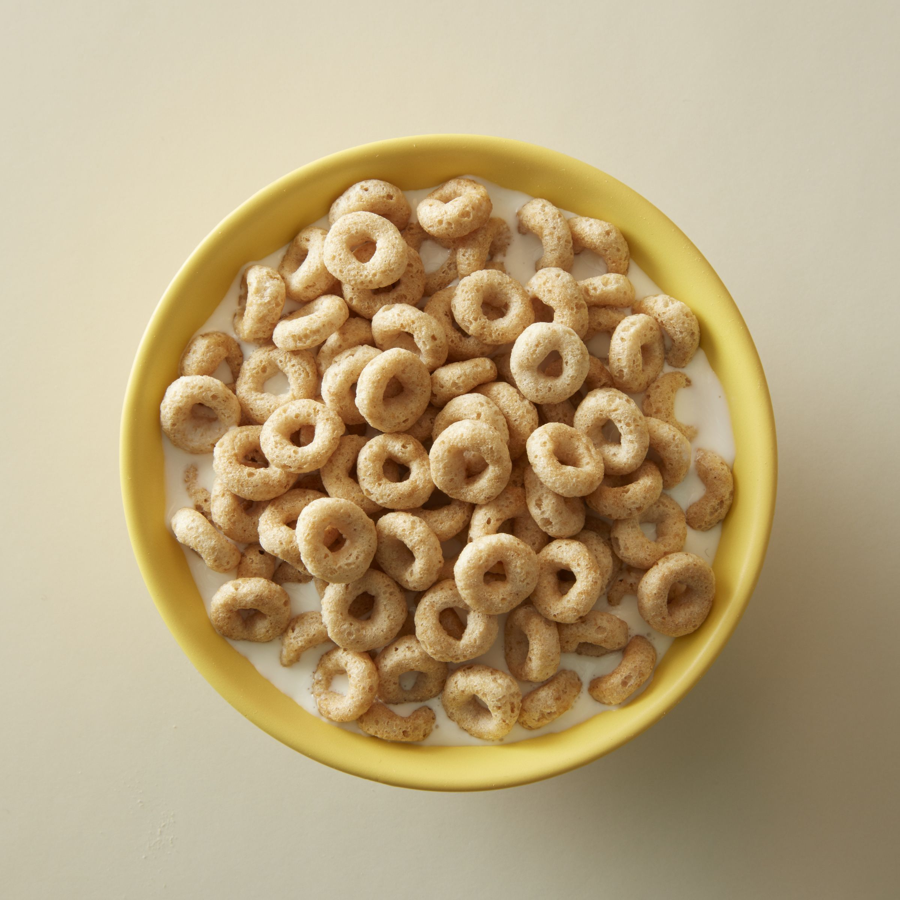

Cheerios

Description:
Make the perfect bowl of Cheerios. This combination of cereal and milk is a classic. Cheerios is oat cereal.
Ingredients:
- Cheerios
- Milk - your choice
- Optional: sliced strawberries or bananas
Steps:
- Pour Cheerios into bowl.
- Pour Milk on top of Cheerios
- Optional - add sliced bananas or strawberries on top
Home